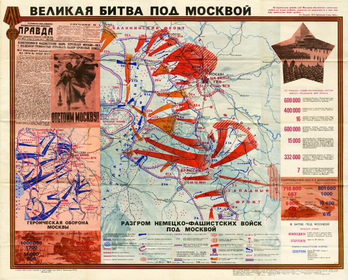
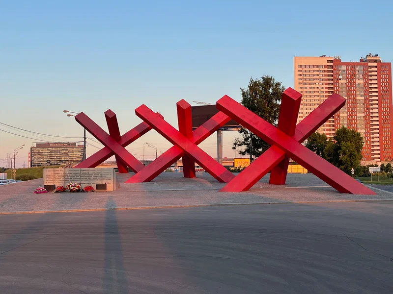

Рубежи обороны Москвы
Нажмите на любую красную точку на интерактивной схеме, чтобы изучить ход сражений на этом направлении
СЕВЕРО-ЗАПАДНЫЙ РУБЕЖ • 27 КМ ДО КРЕМЛЯ
Рубеж Химки — Красная Поляна
Ноябрь – декабрь 1941 года
Ближайший к столице рубеж обороны на Ленинградском направлении. В районе Красной Поляны и Лобни передовые отряды вермахта вышли на расстояние менее 30 км от центра Москвы. Советские войска 20-й армии и зенитчики ПВО остановили врага, а 6 декабря отсюда началось освобождение Подмосковья.
Знаменитый монумент «Ежи» на 23-м километре Ленинградского шоссе в Химках отмечает точку, ближе которой враг не прошёл.
Архивная карта боевых действий (1941–1942)
Схема оборонительных рубежей Западного, Калининского и Юго-Западного фронтов и направления контрнаступления Красной Армии.

Связь времён: 1941 год ↔ Наши дни
Потяните ползунок влево и вправо прямо поверх фотографии, чтобы увидеть, как рубеж обороны на Ленинградском шоссе (Химки) изменился спустя 85 лет.

1941 ГОД • ОБОРОНА НАШИ ДНИ • МЕМОРИАЛ